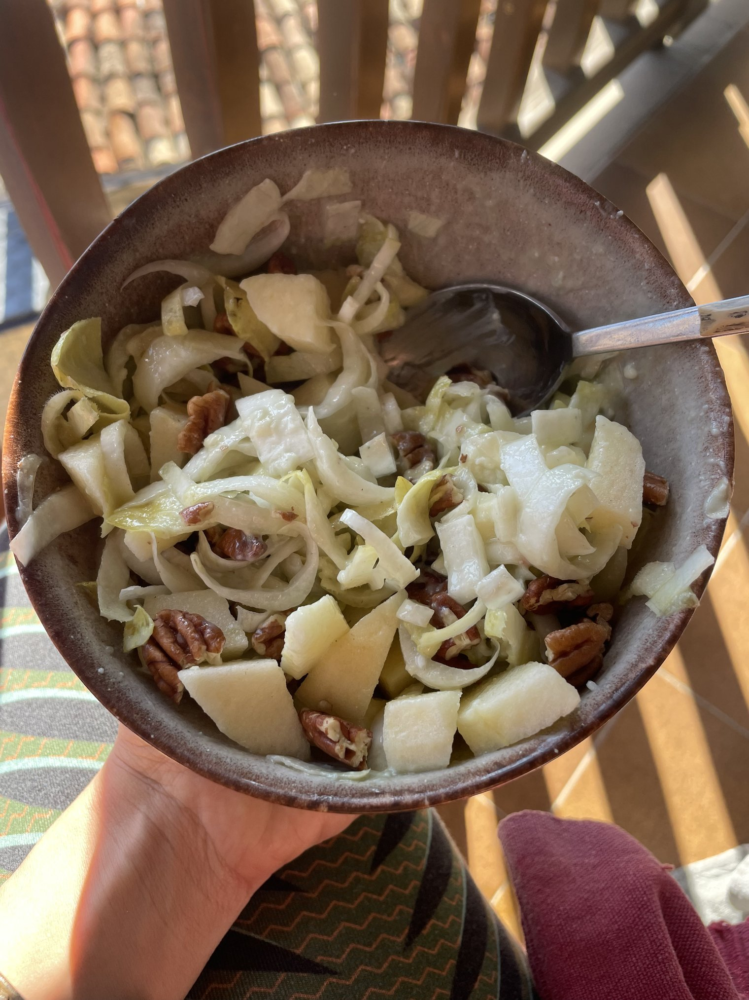

Ensalada de endivias con roquefort, nueces pecan y pera
Ingredients
2×
- 2 endivias
- 1 pera
- 50 g de roquefort
- 1 puñado de nueces pecan
- aceite de oliva
- sal

Preparación
Paso 1
Cortar 2 endivias en tiras y 1 pera en dados.
Paso 2
Mezclar con 50 g de roquefort desmenuzado y 1 puñado de nueces pecan.
Paso 3
Aliñar con aceite de oliva y sal.